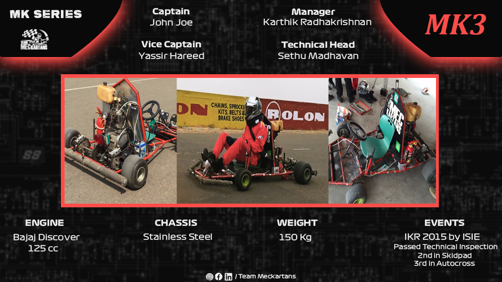
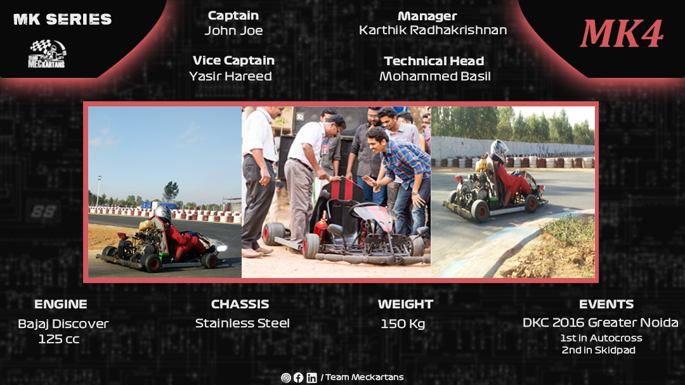

MK1

EVENTS: ISNEE Kolhapur, 2013 ;
Cleared first round
The birth of Team Meckartans and the planning of the first vehicle, the MK1 all started in 2013 when a small group of enthusiastic individuals had the dream to build a fully functional Go-Kart that could complete with student Motorsporting teams in events across the country with the intention to do something beside the normal college curriculum.
The first task was to design the 3D model of the Go-Kart in Solidworks. Since no-one had any prior experience regarding the rules of the event the kart was designed at a larger scale keeping in mind the design of road car. The team cleared the initial design round of ISNEE 2013. The design included many features including “frog-leg” suspension and collapsible steering.
The entire manufacturing process of the kart was quite hasty. The team decided to assemble the Go-Kart at the event site of ISNEE Kolhapur. Unfortunately, the suspension failed, and the entire Go-Kart collapsed which made the team to forfeit the event. Since the team had no money to return, they were forced to sell certain parts of the Go-Kart.
Its quite disappointing that our first event had to end in such a heart break, but it only fueled everyone’s passion to improve and be the team that is today.
MK2

EVENTS : NKRC 2014 by ISNEE;
Qualified Prelims Competed in static events.
The failure of the MK1 affected the team badly and the team had the doubt that whether they were ready to continue with this. They went back to the drawing board. Having seen a lot of Go-Karts in the previous event, the team now had more information on designing and manufacturing one. The team developed the frame of the MK2 using tubular section members and other parts with basic OEM. With the support from the college the team was confident.
Preliminary round of the National Go-Kart Championship conducted by ISNEE was held at Indore. Though the team was better prepared, the standards of the competitors were very high which lead to qualifying in the bottom half of the pack of almost 100 . The Final event was conducted at Kari Motor Speedway Coimbatore.
The team were able to produce a fully functional and running cart on the day of the event, but the failure to meet certain manufacturing guidelines in the rulebook regarding the bumper and the fuel tank resulted in failing the technical inspection and only fit to participate in the static events.
The team had come a long way since the MK1, and they had created a fully functional Go-Kart. Like the great Bram Stoker once said, “We learn from failure, not from success”, the team learned a lot from this setback and continued to improve to be the team that is today.
MK3

EVENTS : IKR 2015 by ISIE;
Passed Technical Inspection 2nd in Skidpad 3rd in Autocross.
After failing the technical inspection in the previous event, the team set out to strengthen the basics of the technical aspects of the kart. The MK3 was an improved version of the MK2 with a lighter chassis, better steering system, improved braking and fuel system and a few changes in the mounting points. The MK3 was considered as one of our best karts on paper till date.
The team took the kart to the Indian Karting Race by the Indian Society of Imperial Engineers at Kari Motor Speedway, Coimbatore. The event witnessed a participation of more than 80 teams and we had the confidence that our kart had a chance to stand out.
The kart passed the technical inspection and for the first time a Meckartans kart was ready to hit the track and we could not have hoped for a better start. The kart performed exceptionally well in the first two dynamic events, bagging second in Skidpad and third in Autocross. The team went into the Endurance event hoping for an overall podium finish. All our dreams were shattered when the shifter of the kart broke off 50m from the start line during the endurance. We were out of the event and had to return disappointed.
The experience of the event lead to a major structural overhaul in team practice which we practice till date.
MK4

EVENTS : DKC 2016 Greater Noida 1st in Autocross, 2nd in Skidpad;
After narrowly missing out a podium in the last season, the team decided to refactor the team. For the first time team decided to conduct a screening test based on the event rulebook to recruit team members and a group of individuals were selected through the same. Hitherto after six years, the same recruiting method is followed.
The MK4 had only little differences from MK3. The engine and braking system remained same and chassis design was improved. The Team enrolled for Dynamic Karting Challenge in Noida. The team was very confident on bagging a podium finish as the cart was proficient.
It was a dream start to the event for the team as we finished first in autocross and second in Skidpad and the only thing standing between us and a podium finish was the endurance the next day. In the last season, we were not able to finish the endurance but this time we were confident for a top three finish. Grievously, our hope shattered as the entire competition was cancelled due to some unfortunate events and we had to go back gutted.
MK5
EVENTS : NKRC 2016 Completed Autocross, Completed Skidpad;
After the unfortunate turn of events in last season,team started work for the next season, the MK5. Work was largely affected by the absence of majority of team members. The team managed to build an above average cart but it was not as good as MK4.
The event was conducted at Kolhapur(NKRC). The first attempt at Technical inspection was a failure. The electrical wiring burnt-out due to wet floor board as a result of rain. This failure paved way for rectification of cart properly and thus passed technical inspection in second attempt. The cart finished autocross and skidpad successfully but driver faced issues during skidpad. He was unable to shift gears and was struck in 2nd gear but still managed to finish only because he was adept . Later this issue was solved.
The next day, in the endurance test, there occurred unexpected turnover of events. The cart completed four laps, during which a racing incident caused a cart to ram into us. It was pulled up to the pits because driver complained of loss of power and saw that carburettor broke off from the mount and couldn't be rectified. So we were unable to complete the event and finished in the 60s among the 170 teams
MK6
EVENTS : FKDC 2017 Overall Runners Up;
MK6 was an improved version of the MK5. The team didn't complicate anything and just added minor changes to improve the performance. The event was Formula Kart Design Challenge (FKDC) 2017, the inaugral edition at Meckokartopia, Banglore. The team had managed to perform consistently in all the events but were not able to secure top 2 finishes for any. The team also managed to secure the best acceleration performance of all the participating teams. When the final results were announced, the team bagged the Runners Up trophy due to the consistency they showcased. All the members were over the moon.
The MK6 turned out to be a milestone in our journey over the years as it was our first podium finish and one of the best karts till date
MK7
EVENTS : NKRC 2017, Bhopal;
The work on the MK7 didn't start on a strong note due to the absence of some main members and the team had the services of a bunch of fresh faces. The kart had only some minor changes from the MK6 and carried forward most of the systems.
This year, the event was National Kart Racing Championship, held in Meckokartopia , Banglore. There were certain issues during the technical inspection, but were rectified immediately and the kart was taken to the track. Due to some issues on track, the team was not able to complete the autocross and the traction test. The team put forward a commendable effort during the skidpad.
Overall, it was an event to forget with regards to the results but lots to learn regarding the experience gained for the new team members as they turned out to be an asset for the team in the future.
MK8
EVENTS : FKDC 2017, Banglore;
The work on the MK8 was done keeping in mind to reduce the shortcomings of the MK7. The weight of the chassis was reduced and many other problems were rectified. A differential was also installed.
The team reached the event site of the Formula Kart Design Challenge season 3 in Banglore Meckokartopia. The autocross, skidpad and acceleration test went well and the team qualified for the endurance.
Badluck struck the team when the carburettor came off from the kart during the first lap of the endurance when the kart was in a good position. As the team was not able to rectify the problem in time, they were black flagged and had to go back to the pits. Overall it was another event to forget but lots to learn and grow.
MK9

EVENTS : SKDC Season 2 Hyderabad;
After a long delay we finally bring to you, a new edition of MK-Series, starting out from where we left off, this post is about our kart MK9
MK9 was based on the MK8 platform using the same engine and chassis with some modifications. The kart's rear engine configuration was not unlike the previous generations, but the major change implemented in MK9 compared to the previous generations was that the clutch was shifted to a hand shifting setup.
MK9 competed in SKDC Season 2 which was held at Hyderabad and the team was confident in its capability, but unfortunately, a problem with one of the kart’s engine sensors led to the kart stopping during the endurance race event. Both MK8 and MK9 used the Bajaj 125 cc engine and due to similar engine problems in both karts the team decided to retire the Bajaj engine and began the search for an alternative engine for the future MK generations.
MK10
EVENTS : FKDC Season 3 pune;
The MK-10 is the preceding generation of MK 9 in the MK series, and it differs drastically from all the previous generations. In Mk 10, the entire design was updated to address all the issues raised during the previous year, including the kart's overall size reduction and the location of the hand clutch next to the steering wheel.
As the performances of the MK 8 and MK 9 engines were not up to the mark, the team started its research and found a better-performing engine which is a 125cc engine of Honda stunner. The MK-10 competed in FKDC season 3 in Pune.Since then the team equally focused on static and dynamic events.
The team successfully secured second position in design CAE along with the business plan. however, the steering capabilities of Mk 10 were yet to be improved.The participation and success in the third season of the FKDC marked a milestone in the team's history
MK11
EVENTS : FKDC Season 4 kari, Coimbatore;
ACHIEVEMENTS - 3rd Overall, 2nd in Acceleration ,1st in Business Plan, 1st in Design and CAE, 2nd in Endurance
It's finally time for MK 11. The finest moment in Team Meckartan's history was achieved with MK 11. The kart participated in the fourth season of FKDC, which was held at Kari Motor Speedway in Coimbatore.
The MK 11 was one of the best karts built by the team in terms of dynamic performance and design. The challenge the team encountered was steering manoeuvrability, which caused difficulty during autocross, and the team competed well in all the other dynamic events. In the case of static events, the team fell short in cost report but excelled in all the other events.
Speaking of the go-kart, the team's main improvement this year was the addition of a chain tensioner. A 125cc Honda stunner engine was also employed. For Team Meckartans, season 4 of FKDC was a game-changer.
The team won-
First place in the design&cae and business plan, Second place in both endurance and acceleration, Third place overall.
MK12-A
EVENTS : FKDC Season 5 (Online);
ACHIEVEMENTS- 3rd Overall
MK 12A, a design prototype was presented at FKDC Season 5 which was conducted online due to the covid restrictions where there was no requirement to manufacture the Go-kart.
The Mk 12A design was updated and improved from the previous generation go-karts. The main update in the design concept was the topology optimisation and shape which was optimised to reduce the weight by using Ansys software.
The team secured the 3rd position in the FKDC Season 5 (Online)